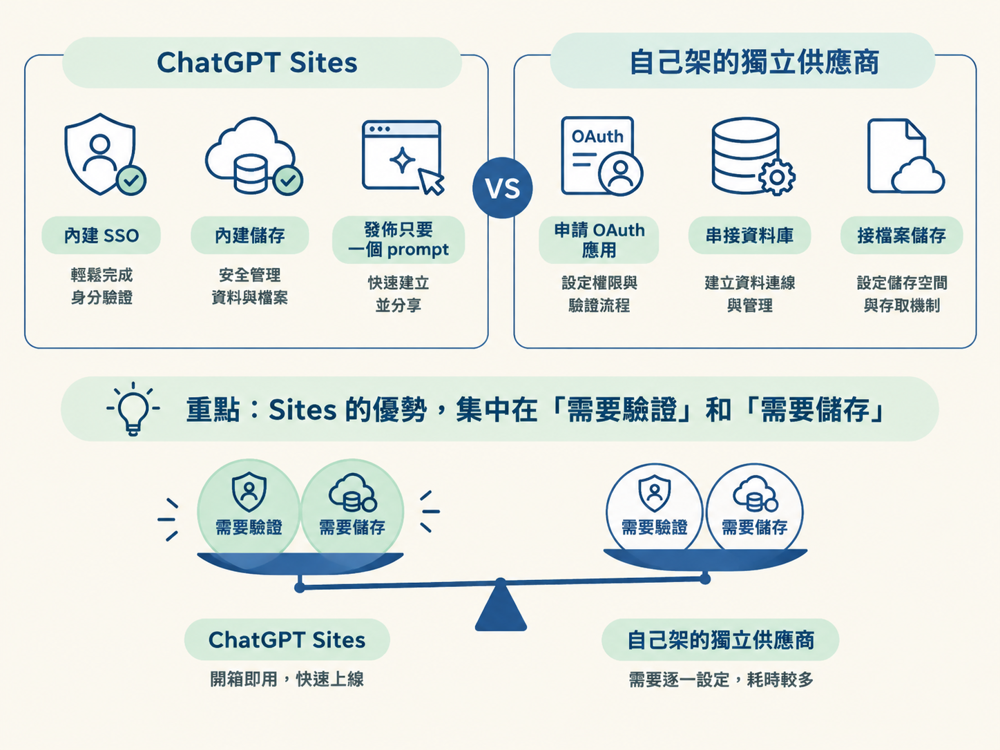
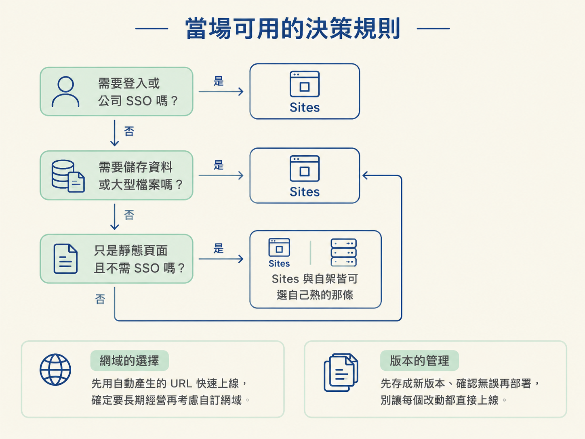

東西在 Codex 裡做好了，接著一定會撞上同一個問題：要放到哪裡讓別人看得到？最省事的答案是 Sites，一個 prompt 就換來一個網址。但真正讓人卡住的不是「Sites 能不能做到」，而是兩股力量在拉扯。
一股拉向 Sites：全部交出去，換來省事與整合。另一股拉向自己找供應商：多花一點工，換來對底層設定的完全掌控。再加上兩個附帶決定（這個網站要不要公開、要用自動產生的網址還是自訂網域），選擇就變成了一團。
這一課不教操作，而是給你一組能自己問自己的判別條件。前幾課你已經知道 Sites 有哪些能力與限制，現在要把那些知識變成一句「這次該不該用它」的判斷。讀完你能自己決定一件事：這個專案走 Sites 還是自架。
把 Sites 和自己找一個獨立供應商放在同一張表上，差異才看得清楚：
| 面向 | ChatGPT Sites | 自己架的獨立供應商 |
|---|---|---|
| 公司 SSO 登入 | 內建，可沿用公司 SSO 與 workspace 群組 | 要自己設定，常需要申請 OAuth 應用並符合公司要求 |
| 需要儲存或資料庫 | 內建結構化與 blob 儲存，依需求自動挑選 | 要另外串資料庫與檔案儲存服務 |
| 只是靜態 landing page | 可以，發佈只要一個 prompt | 也可以，而且通常很簡單 |
| 對底層設定的掌控 | 交給 Sites 代管，能調的是設定面上的選項 | 完全掌控主機、部署與網路設定 |
| 帳號前提 | 至少 ChatGPT Plus | 各供應商自己的帳號與計費 |
| 費用 | 公開測試期間 Plus 上不限量，定價未定 | 依供應商與用量計費，通常可預期 |
看這張表會發現一件事：Sites 的優勢集中在「需要驗證」和「需要儲存」這兩件事上。偏偏這兩件事，正是自己架最花時間的地方：申請 OAuth 應用、串資料庫、接檔案儲存，每一項都要另外開一條線。

反過來，如果只是要一個靜態頁面，而且不需要公司 SSO，自己架其實沒有多吃力。外面本來就有一堆可以部署靜態站的地方，Sites 的便利在這種情況下顯不出多少差距。
不確定的時候，依序問自己下面這幾句。只要有一句的答案是「是」，往 Sites 靠的理由就多一分。
反過來，如果你心裡問的是「我需要在這個平台上自己調主機與網路設定嗎？」或「我已經有一套自己熟悉的部署流程嗎？」這兩句，那往自架靠的理由就變多了。
任何判別都有例外。下面三種情況，規則會翻過去。
如果要的只是一個沒有登入、不用儲存的靜態 landing page，自己架可能同樣簡單，甚至更單純。講師示範的那個園藝店 landing page 就是這種：公開分享不過是一句 prompt 的量。簡單是真的很簡單，但靜態頁面本來就不是難關，兩邊都做得動，就別拿「Sites 比較快」當唯一理由。
企業帳號下，網站能不能公開、能不能用自訂網域，取決於管理員允許到什麼程度。就算 Sites 在技術上做得到，公司政策也可能讓你做不到。這種情況下，決定權根本不在你手上。
Sites 目前在公開測試期，Plus 上不限量，但定價還沒定案，之後可能依儲存等方式計費，自訂網域通常也要額外付費。要長期、大量地跑，這筆帳得保守估算，別把「現在免費」當成「永遠免費」。另外記住一點：Sites 只發佈網頁，不發佈行動 App。
需要登入（尤其公司 SSO）或需要儲存時，優先用 Sites。
只是靜態頁面又不需要 SSO 時，Sites 與自架都可以，選你更熟的那條。
網域上，先用自動產生的 URL 快速上線，確定要長期經營再考慮自訂網域。
版本上，先存成新版本、確認無誤再部署，別讓每個改動都直接上線。

到這裡，這個節點的四步都走完了：你知道 Sites 是什麼、怎麼部署、設定面有哪些選項，也知道了什麼時候該用它。下一步很具體：挑一個你已經在 Codex 裡做好的東西，用 Sites 推上線，實際量一次「一個 prompt 到一個網址」的距離。